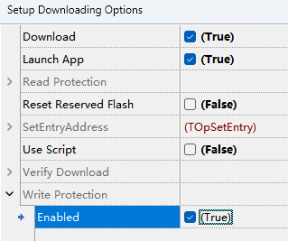

- ING916XX 使用内部 RC 为主时钟时，如果要使用省电模式，则 RC 频率暂时只能配置为 24MHz。
v8.4.3
1. 软件包
-
[更新] ING916: 优化省电性能
每个工作周期电量修消耗降低 ~1μC （具体数值受频率等因素的影响）。
-
[修正] ING916: 同时允许
BLE_ONLY_SLEEP和DEEP_SLEEP时频繁重启
2. 外设驱动
- [修正] ING916:
PINCTRL_DisableAllInputs里的溢出问题
3. 示例
- [更新] Peripheral Console (…): 在 ING916 上允许
BLE_ONLY_SLEEP
4. 工具
-
[更新] Cube
修正了为 USB 生成的代码。现在允许一个数字管脚用作两种功能（GPIO 及另一种外设的输入）， 并给出警告。
v8.4.3
1. 软件包
- [修正] v8.4.1~v8.4.2 ING916 睡眠状态下底电流时大时小的问题 (涉及 mini 和 noos_mini 软件包)
v8.4.2
1. 软件包
-
[修正] v8.4.1 ING916 睡眠状态下底电流变大的问题 (涉及 mini 和 noos_mini 软件包)
-
[更新]
platform_calibrate_32k现在，每次调用
platform_calibrate_32k时，将调整下次的校准时间至PLATFORM_CFG_32K_CALI_PERIOD之后。旧版本调用platform_calibrate_32k不会影响下次的校准时间。
2. 外设驱动
-
[新增] Sofware d/h/m/s RTC
为 ING918xx 增加了一套基于
platform_set_timer等 API 实现的天、时、分、秒计时器， 接口与 ING916XX RTC 兼容。对于 ING916xx，可通过SOFTWARE_RTC_DHMS编译开关选择硬件方式或者软件方式。两种实现方式的区别：
-
对于软件方式，使用
RTC_SoftSetISR设置“中断”处理函数，而非platform_set_irq_callback； -
对于软件方式，除了
RTC_SoftSetISR， 所有 API 只在协议栈初始化之后（PLATFORM_CB_EVT_PROFILE_INIT事件）方可使用； -
软件方式不需要调整（Trim），其精度由软件包内置周期性校准功能保证；
-
软件方式下的“中断”实际就是
platform_set_timer等的回调函数，“抖动”比硬件方式大。
-
-
[更新] ING916xx: 提供更多的 GPIO 唤醒方式
详见 外设开发者手册-睡眠唤醒源。
-
[新增] ING916xx:
RTC_TrimRTC_Trim实现了完整的 ING916xx RTC 数字调校功能。 -
[更新] ING916xx: 更多的 KeyScan API
增加了 Loop 中断、FIFO 相关的接口。
v8.4.1
1. 软件包
-
[修正] Raw Package API: 当接收的数据包的数据长度为 0 时报错
-
[更新] ING916: 将更多的代码移动到 RAM 以降低功耗 (限 mini 和 noos_mini 软件包)
该更新针对空包维持连接状态优化了功耗。
-
[新增] BLE 协议栈 API:
btstack_reset可完整复位协议栈。
-
[新增] platform event:
PLATFORM_CB_EVT_HCI_RECV -
[新增] platform API:
platform_get_link_layer_interf借助以上两个接口可完整暴露 Controller 的功能，为开发 BLE Dongle 带来可能。后续版本将提供示例。
2. 外设驱动
-
[新增] ING916xx: Flash 写保护接口
flash_enable_write_protection通过此接口可将 ING916xx 内置的 Flash 的全部或者一部分置为写保护状态。再次向写保护区域写入数据时，需要先解除写保护。
-
[更新] ING916xx: USB BPS 头文件中增加
bsp_usb_disable -
[修正] ING916xx:
KEYSCAN_Initialize对 GPIO 上下拉的配置。 -
[修正] ING916xx:
SYSCTRL_SelectMemoryBlocks潜在的睡眠电流达 20uA 的问题
3. 工具
-
[更新] Downloader: 为 ING916 增加 Flash 写保护选项。

-
[更新] ING916 Flash 下载算法
更新后的 ING916 Flash 下载算法行为如下：
- 开始下载时，解除写保护。
v8.4.0
1. 软件包
-
[修正] SM：配对设备数量超出存储容量时不报错
过去，当超出存储容量时，SM 模块仍会在 SM_EVENT_STATE_CHANGED 事件中报告
SM_FINAL_PAIRED等成功信息； 现在，SM 模块将在 SM_EVENT_STATE_CHANGED 事件中报告SM_FINAL_FAIL_OUT_OF_STORAGE。 -
[修正] Controller：使用可解析地址的定向广播时的兼容性
当向可解析地址发送定向广播时，旧版本存在兼容性问题，导致无法与某些设备建立连接。现已修复。
-
[更新] 键值存储模块（kv_storage）现在允许自定义后端实现
默认的 KV 后端在写入时通过
f_kv_write_to_nvm回调一并写入所有数据。 如果发现默认的 KV 实现方式不合适，可以在app_main里调用kv_init_backend，传入自定义的后端接口。void kv_init_backend(const kv_backend_t *backend);自定义后端带来了灵活性，比如利用
kv_value_modified_of_key接口可实现小颗粒度（K-V 对）的精细化存储。 -
[修正] Host：使用公共地址（public address）时无法配对
-
[修正] ING916xx:
platform_switch_app功能异常 -
[修正] ING916xx: BLE_ONLY_SLEEP 睡眠模式的稳定性问题
-
[更新] 提供更多的定时器接口
platform_get_timer_counterplatform_set_abs_timerplatform_delete_timer
相比原来单一的
platform_set_timer，现在的接口可实现更多功能，比如准确模拟周期性定时器。 -
[新增] GAP API：
gap_set_callback_for_next_hci具体用途将在后续版本中演示。
-
[新增] SM API：
sm_register_external_ltk_callback一些 BLE 应用可能会以自定义的方式协商 LTK（比如 Find My）。通过此 API 注册回调， 可将这种外部生成的 LTK 传递给 SM 层。
注意：此 API 处于实验阶段，后续版本可能修改。 -
[新增] 链路层配置项：
LL_CFG_FEATURE_SET_MASK有时需要“模仿”其它 BLE 设备的链路层协议流程，而支持的特性对后续的链路层协议流程影响很大。 为此增加了链路层特性掩码，方便开发者即时调整上报给对端设备的链路层特性。例如，模仿只支持加密和 2M PHY 两种特性的设备：
const uint8_t feature_mask[8] = { 0x01, // 比特 0: LE Encryption 0x01, // 比特 8: LE 2M PHY }; //... ll_config(LL_CFG_FEATURE_SET_MASK, (uintptr_t)feature_mask);注意，这里只是修改了 Feature Exchange 流程的上报值，对链路层的实际功能没有影响。
2. 外设驱动
-
[修正] ING916xx:
SYSCTRL_EnableConfigClocksAfterWakeup与 Flash 读保护功能冲突 -
[修正] ING916xx:
SYSCTRL_CacheControl无法配置 D-Cache 的问题 -
[修正] ING916xx:
apSSP_DeviceParametersSet参数范围溢出时寄存器配置异常 -
[修正] ING916xx:
ADC_GetVol遇到最大读数时返回值错误 -
[修正] ING916xx: ADC/PDM 的时钟分频范围
-
[新增] ING916xx: 将 PLL 的输出分频并输出到指定的管脚
新增了两个相关的接口：
SYSCTRL_EnableClockOutputPINCTRL_SelClockOutput
3. 示例
- [更新]
HID Keyboard：演示里kv_init_backend的用法
4. 工具
- [更新] Cube: 修正了一些问题，增加 PLL 分频输出相关功能